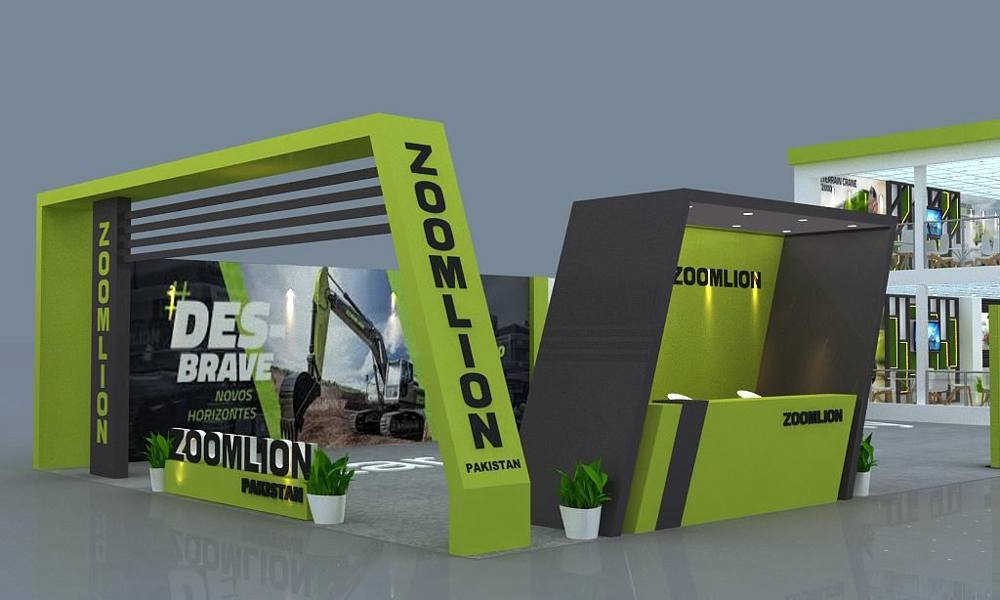
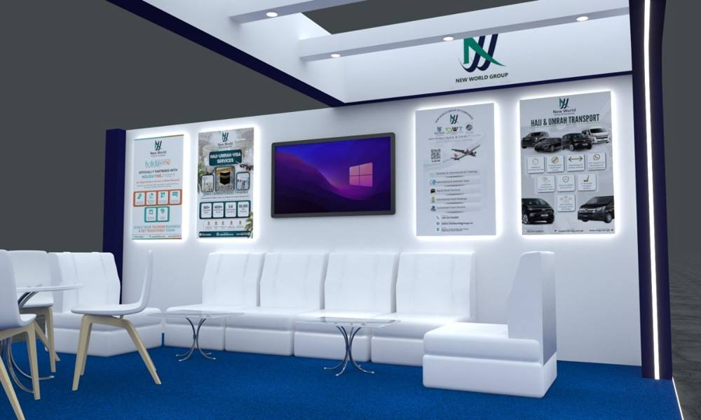
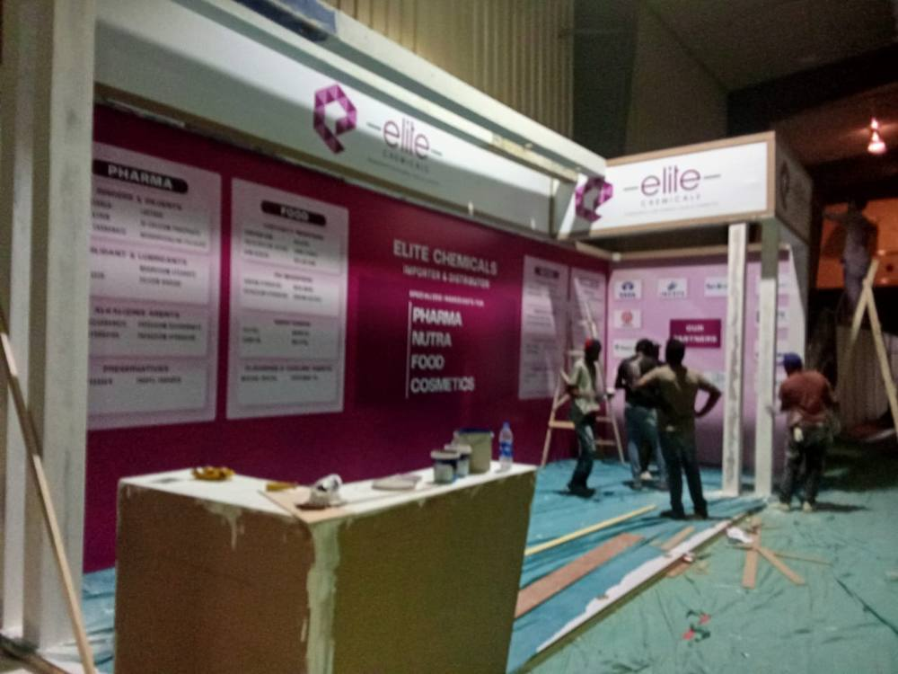
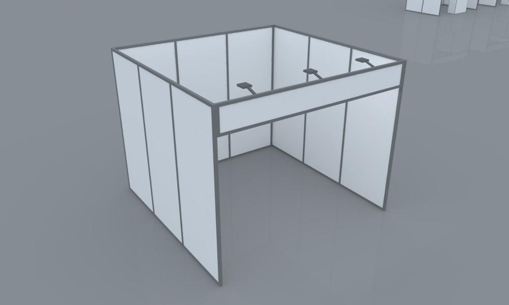

Exhibition Stall Design in Pakistan: How to Plan a Stall Visitors Actually Enter
A stall is judged in seconds, so design is less about decoration and more about directing attention. This page explains the mechanics, so you can brief a designer, ours or anyone else, with confidence.
What a stall design actually decides
Every stall has three zones: an entry zone that invites, a dwell zone where products or messages hold people, and a conversation point where a staff member can talk. Most weak stalls fail because these collide: a counter blocks the entry, or products sit where nobody can stop without causing a queue.
Good design also ranks its messages. One headline should be readable from the aisle, a second layer reward people who come closer, and detail belongs at hand height. If everything shouts, nothing is heard.
Buildable by design
A beautiful drawing that cannot be built on time is a liability. Our designs are made to be carpenter-friendly, created by certified 3D artists who follow structural engineering best practice, then, where your project calls for it, test-assembled in our workshop before they ship. Because we design and fabricate under one roof, awkward joints and unsupported spans are caught on screen.
A brief that gets better design
- Your goal: leads, launch, meetings or awareness
- One headline message and one hero product
- Stall size, position and the event date
- Logo files and brand colours
- Staff numbers and what they will do at the stall
- Budget range, and any must-haves
What you receive
A layout, 3D renders for your approval, and the build drawings our own workshop uses. We do not cap revisions: we keep refining until you are satisfied, and most designs are finalised within a couple of revisions. Design sign-off is needed at least one week before the event, and larger stalls need far longer. Compare stall types and starting prices.
Stall design for exhibition: start with the job your stall has to do
Pakistani exhibitors tend to ask for "stall designs" by picture. A better starting point is the job: a brand stall that makes one message unmissable, a product stall that lets people handle something, a promotional stall that collects sign-ups, or a conference stall with room to sit and talk.
Each one is drawn differently. We explain the categories, with prices, on our stall categories section.
Exhibition stall design ideas that work
Good stall design is rarely about adding more. These ideas work across stall types:
- One hero wall: one message, large enough to read from the aisle.
- A lit fascia: a backlit name board is readable from far away.
- A counter where visitors slow down: place it so people can stop without blocking the aisle.
- An open front: invite people in, and avoid a barrier across the whole frontage.
- Eye-level products with one demo point: let visitors see the product up close.
- A quiet meeting corner: useful on island and double-deck stalls, away from aisle noise.
- Graphics fitted to the panels: printed panels give a clean, finished look.
- Every side a front: on an island booth, design all four sides.
See these ideas in the exhibition stall portfolio and case studies, compare exhibition booth branding and printing options, and check exhibition stall types, sizes and prices.
Design and fabrication under one roof
Stall designing is only half the work. The same team that draws your stall also fabricates it, so a joint that looks fine on screen but fails in wood gets fixed before it is cut. Read how that works in expo stall fabrication in Pakistan, and what materials we draw in on our exhibition stall materials guide.
From our builds





Stall designers in Karachi, Lahore, Islamabad and Multan
The same discipline bends to local conditions. Pick the city where your show is:
- Karachi stall designer and fabricator: designing for damp coastal air, so edges are sealed and graphics survive transport.
- Lahore stall designers and fabricators: designing for summer heat and the long approach of a big hall.
- Islamabad booth designer and fabricator: designing for formal rooms and constant cameras.
- Multan stall designer: designing for attention per rupee and dusty surfaces.
- Customized kiosk manufacturers: designing small units that sell in a few square metres.
Common questions
What does an exhibition stall designer do?
An exhibition stall designer plans the layout, flow, branding and structure of a stall and produces 3D renders for approval. We also build and install what we design, so nothing is lost between drawing and show floor.
What makes an exhibition stall design effective?
Clear entry, a dwell zone where visitors can pause, a conversation point for staff, and a message hierarchy readable at distance, mid-range and close up.
Do I need a 3D design before building?
It is strongly recommended. A 3D render lets you check scale, flow and sightlines before anything is cut.
How many design revisions are included?
We do not cap revisions. We work with you until you are satisfied, and most designs are finalised within a couple of revisions.
How soon before the event must the design be approved?
At least one week before the event, though larger or custom stalls need much more time.
Do you design for kiosks and event setups too?
Yes. We design kiosks, mall standees, ticket counters, booth gates and conference or outdoor event setups.
Which cities do your stall designers cover?
We have workshops and teams in Karachi, Lahore, Islamabad, Faisalabad and Multan, and we design for and deliver to shows in other cities, including Rawalpindi and Bahawalpur.
What is the difference between stall designing and stall fabrication?
Stall designing decides the layout, flow, branding and structure, and ends in 3D renders and build drawings. Stall fabrication is the workshop stage that turns those drawings into a physical stall. We do both under one roof.
Do you offer custom stall design?
Yes. Every design is custom to your brand, space and organiser rules, from compact custom exhibition stands to island and double-deck booths. Starting prices are on our stall types page.
What does a stall design cost?
Design and 3D rendering are part of our installed starting prices, from PKR 13,000 for a basic 10x10 package. See the stall price list.
Related reading
- how a 3D render checks your stall: approve scale, flow and lighting first.
- how to plan an exhibition stall in ten steps: from goal to follow-up, in order.
- exhibition booth tick-box checklist: seven stages from booking to follow-up.
- exhibition stall types, sizes and prices: from kiosks to double-deck booths.
- which graphic suits your stall: backlit, fabric, vinyl and floor graphics.
- exhibition stall fabrication in Pakistan: see how a stall is built, from frame to finish.